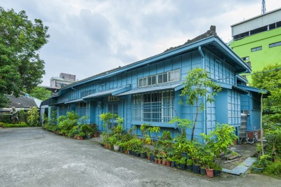
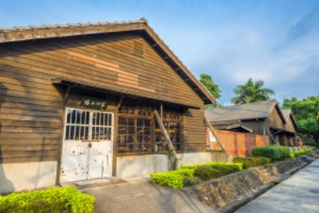
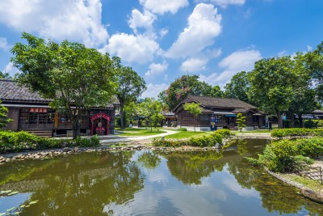

| 認識嘉義 | |
開發甚早的嘉義，舊稱「諸羅縣」，是清領時期全台三座縣城之一。日治時期因林業開發使其商業活動達到頂峰，故有「木材之都」之稱。1906年，嘉義發生大地震，不少傳統屋舍幾近全毀，災後因林業發展的地緣關係及防震需求，重建後多以木造街屋為主，造就嘉義為全台目前保存最多木造建築的城市；同時也因嘉南大圳的興建，灌溉出大片的稻作和甘蔗田，成為當地糖業及酒廠事業蓬勃發展的重要推手。 嘉義市建城300多年，因位於阿里山森林腳下，是林場木材集中與轉運的重要場域，具有豐富獨特之歷史脈絡，至今仍保有約6000棟的木構造建築，堪稱嘉義的「第二座森林」，使嘉義市具有獨一無二之文化資產潛質。 |
 |
| 歷史老屋訴說時代故事 | |
城隍廟一帶為嘉義最早發展的商業中心，以蘭井街為分界，當年環繞著城隍廟周邊的市集極為興盛，而後方則是一片的荒蕪。」爾後日治時期對阿里山林場的開發，使嘉義深受日本文化影響，漫步街道，不時可見日式木造平房夾處高樓建築之間；坐落於嘉義市政府大樓附近的台灣嘉農校友會，建於1930年，也是嘉義市的市定古蹟，原為「嘉農校長官舍」，如今轉為校友會辦公室使用，平日辦公時間可造訪，從中窺見日式木造房舍的結構之美，及屬於嘉農棒球的動人故事。 同樣為日治時期創建的國定古蹟嘉義舊監獄，是全台唯一完整保存日治時期監獄的全貌，也是嘉義市舊有建築空間與人文融合的最佳代表。吸取西方當時最先進的監獄制度而建造的放射狀建築格局，搭配獄政歷史、文物重現當時受刑人生活環境的展示空間，可感受到當年監獄的肅穆氛圍。 |
 |
| 嘉義美好變身 | |
| 嘉義，因古城形似桃子而有「桃城」的別稱，早年憑藉著鐵路及蜿蜒的嘉南大圳，帶動商業發展，歷經歲月洗禮，豐饒物產所牽起的生活脈絡依然清晰。近年來，隨著嘉義市推行文創、老屋活化等政策，讓修繕後的老空間重生，成為涵育文化的創意平台。 |  |
| 資料來源：Tlife網站 | |